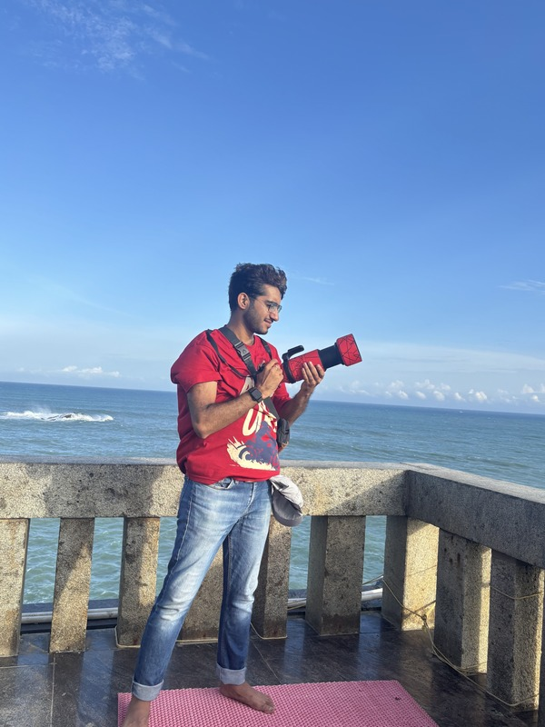

A quiet observer with a fast shutter.
I am Aayush, a Bangalore-based photographer and software engineer. The technical side helps me plan; the camera helps me notice what planning cannot manufacture.


My work sits between portraiture, travel, wildlife, and small visual details. I like images that feel like they were waited for: a bird turning into light, a face relaxing between poses, a coastline shifting color, a flower becoming a graphic mark.
The goal of this portfolio is simple: show range without making the visitor guess what I can be hired for. I am open to portrait sessions, creator profiles, brand image sets, travel-led stories, and selective collaborations.
I studied Mathematics and Computing at IIT(ISM) Dhanbad and currently work in software. That background gives my creative process a strong production rhythm: clarify the goal, plan the shoot, stay alert on location, and deliver a set that can actually be used.
How I approach a shoot.
No overbuilt production language. We define the purpose, build a reference direction, shoot for real use cases,
and edit for a coherent set rather than isolated good frames.
Send a Brief